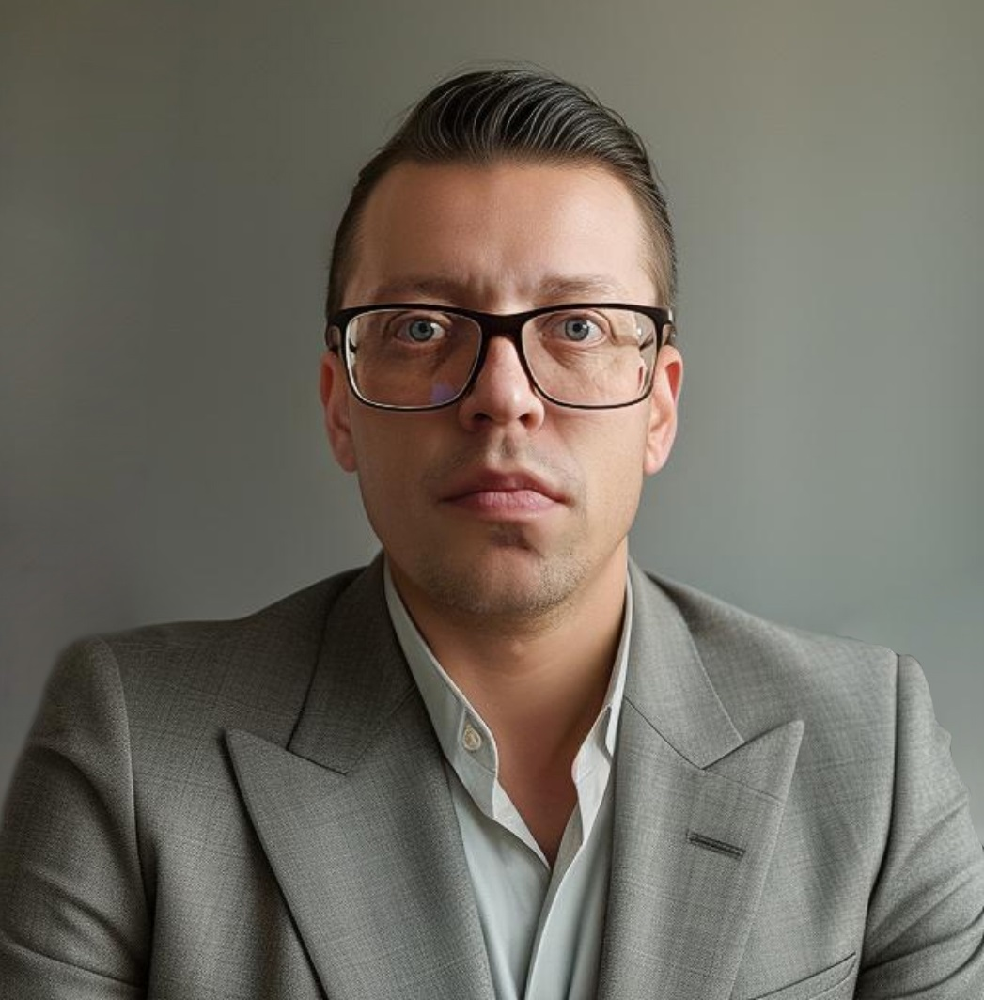

Tomas Petravičius
Darbo vertė matuojama ne vien atlygiu, bet ir tuo, kiek ji prisideda prie žmogaus vidinio augimo. Kai darbas tampa erdve tobulėti, darbuotojo potencialas auga kartu su jo sukuriama verte darbdaviui. Tokia pusiausvyra dažnai yra ilgalaikės profesinės sėkmės pagrindas.
| Tomas Petravičius | |
|---|---|
|  Kontaktinis telefono numeris: +370 626 98 404 El. paštas: petravicius.tomas+job@gmail.com |
Kaip aš mąstau
Aš visada buvau smalsus, kaip veikia dalykai. Ne tik technologijos ar sistemos, bet ir žmonių sprendimai, įpročiai, tarpusavio ryšiai. Kai žiūri į procesus pakankamai ilgai, pamatai, kad net chaosas turi savo struktūrą – tiesiog ji ne visada matoma iš pirmo žvilgsnio. Man patinka būtent tas momentas, kai iš netvarkos išryškėja logika, o iš logikos – aiškumas. Analitinis mąstymas man yra būdas matyti realybę be iliuzijų. Bet kartu aš žinau, kad vien analizė neužtenka. Vien skaičiai nepaaiškina, kodėl kai kurie sprendimai „veikia“. Ten, kur baigiasi logika, prasideda kūryba – gebėjimas jungti mintis, kurios iš pirmo žvilgsnio nesusijusios. Šis derinys leidžia man matyti ne tik, kaip yra, bet ir kaip galėtų būti.
Darbas kaip abipusė vertė
Darbas man nėra tik užduočių sąrašas ar atsiskaitymas už valandas. Tai procesas, kuriame aš mokausi, stebiu, analizuoju, kuriu. Kai kuriems žmonėms svarbiausia rezultatas, bet man ne mažiau įdomus kelias iki jo – sprendimai, kuriuos tenka priimti, kompromisai, kuriuos pasirenki, ir supratimas, kuris iš to gimsta. Mano darbo principas – aiškumas. Aiški mintis, aiškus tikslas, aiški priežastis, kodėl darau būtent taip. Tą aiškumą bandau kurti visur – nuo struktūros iki bendravimo. Kai viskas išdėstyta logiškai, atsiranda erdvės kūrybai; kai procesas tvarkingas, galima sau leisti improvizuoti. Aš vertinu komandą, kurioje kalbama atvirai, o sprendimai priimami remiantis argumentais, ne hierarchija. Man svarbu būti tarp žmonių, kurie domisi tuo, ką daro, ir moka pasakyti „nežinau“ ne kaip silpnumo, o kaip smalsumo ženklą.
Kryptis ir augimas
Aš tikiu, kad vertė kuriama ne dirbant greitai, o dirbant kryptingai. Geras darbas yra ne triukšmas, o ritmas, kuris turi prasmę. Man įdomu būti ten, kur analitinis mąstymas susitinka su kūrybišku požiūriu, kur reikia ne tik žinoti, bet ir suprasti. Ieškau vietos, kur galėčiau prisidėti per savo mąstymą – analizuodamas, struktūruodamas, jungdamas idėjas ir žmones. Noriu dirbti aplinkoje, kurioje vertinama aiški logika, žmogiškas tonas ir gebėjimas išlaikyti pusiausvyrą tarp proto ir intuicijos. Galiausiai, man svarbiausia, kad darbas turėtų prasmę – kad tai, ką darau, būtų naudinga, įdomu ir tikra. Nes kai tai ką darai sutampa su tuo kaip mąstai, iš to gimsta sprendimai, kurie iš tiesų keičia dalykus.
Gyvenimo aprašymas
Tomas Petravičius
The value of work is measured not only by compensation, but also by how much it contributes to personal inner growth. When work becomes a space for self-improvement, the employee's potential grows along with the value they create for the employer. Such balance is often the foundation of long-term professional success.
| Tomas Petravičius | |
|---|---|
Contact phone number: +370 626 98 404 E-mail: petravicius.tomas+job@gmail.com |
How I Think
I have always been curious about how things work. Not just technologies or systems, but also people's decisions, habits, and interpersonal connections. When you look at processes long enough, you see that even chaos has its structure – it's just not always visible at first glance. I like that moment when logic emerges from disorder, and clarity from logic. Analytical thinking for me is a way to see reality without illusions. But at the same time, I know that analysis alone is not enough. Numbers alone don't explain why some decisions 'work'. Where logic ends, creativity begins – the ability to connect thoughts that seem unrelated at first glance. This combination allows me to see not only how things are, but also how they could be.
Work as Mutual Value
Work for me is not just a list of tasks or accounting for hours. It's a process in which I learn, observe, analyze, create. For some people, the result is most important, but for me, the path to it is no less interesting – the decisions you have to make, the compromises you choose, and the understanding that arises from it. My work principle is clarity. Clear thought, clear goal, clear reason why I do it that way. I try to create that clarity everywhere – from structure to communication. When everything is laid out logically, space for creativity emerges; when the process is orderly, you can allow yourself to improvise. I value a team where people speak openly, and decisions are made based on arguments, not hierarchy. It's important for me to be among people who are interested in what they do and can say 'I don't know' not as a sign of weakness, but as a sign of curiosity.
Direction and Growth
I believe that value is created not by working fast, but by working purposefully. Good work is not noise, but a rhythm that has meaning. I'm interested in being where analytical thinking meets a creative approach, where you need not only to know, but to understand. I'm looking for a place where I can contribute through my thinking – analyzing, structuring, connecting ideas and people. I want to work in an environment where clear logic, human tone, and the ability to maintain balance between mind and intuition are valued. Ultimately, the most important thing for me is that work has meaning – that what I do is useful, interesting, and real. Because when what you do aligns with how you think, solutions that really change things are born from it.